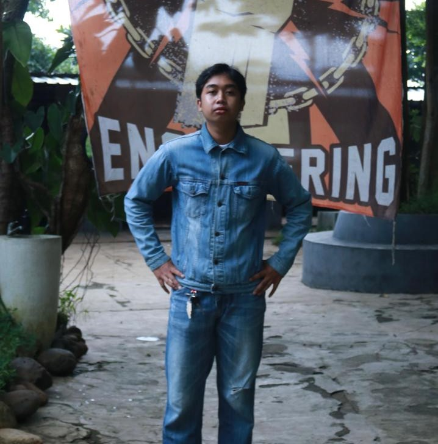

Saat ini saya sedang fokus belajar dan mempersiapkan diri untuk perkuliahan semester 6, khususnya dalam mempelajari project yang akan menjadi bekal untuk capstone. Selain itu, saya juga mengikuti kepanitiaan UNFEST dan ELCO 2026.
Cita-cita saya lanjut studi S2 atau Management Trainee (MT).
Cyber Security, Artificial Intelligence, IT Project, atau UI/UX. Saya tertarik pada bidang Cyber Security, Artificial Intelligence, IT Project, dan UI/UX Designer karena bidang-bidang tersebut memiliki peran penting dalam perkembangan teknologi. Saya ingin menambah pengalaman dan pemahaman dalam mengembangkan teknologi, mulai dari menjaga keamanan sistem, memanfaatkan kecerdasan buatan, mengelola proyek IT, hingga membuat aplikasi yang mudah dan nyaman digunakan oleh pengguna.
